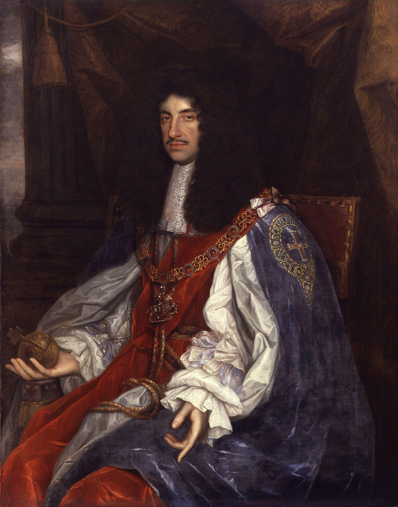

This is the period when the monarchy was restored with Charles II

Charles II is the son of Charles I exiled to Francia, with him the restoration of the monarchy in 1660. Charles II in 1662 patronise the Royal Society that is an important association his motto is: 'Nullius in verba', the association was composed by scientist and intellectuals. During is reign in 1665 there was an outbreakof the bubonic plague that kill a lots of people. In 1660 the Great Fire of London destroy none-tenths of the building, so Charles II decide to ask to the architect Sir Christopher Wren to re-build the old insanitary City. In 1670 he signed the Treaty of Dover in preparation for a joint war against Holland.
When James II come to the throne in 1685 he place the Chatolics in position of authrity in the army and universities. He had two protestant daughters, Mary and Anne who merried the rulers of Holland and Denmark. In 1688 William of Orange marched across souther England. In January of 1689 William and Mary joint monarchs as William II and Mary II the monarch had been chosen by Parliament, not by divine right, becouse start a revolution. We know this war as Bloodless or Glorius Revolution becouse this revolution succeeded without any fighting. In 1689 was released the The Toleraction Act that introduce more religiuos tollerance. James II in 1689 with the support of the Chatolics in Ireland and Scotland landed in Ireland and tried to take control over te English Protestant but in 1690 he was defeated by William. His daughter Mary die in 1694 by a smallpox With the Act of Settlement in 1701 arrive to the throne Anne becouse the Chatolics were excluded from the throne
Anne was a popoular queen that mada important political decision in 1707 was passe the Act of Union wich the kingdom of England and Scottland become United Kingdom of Great Britain established by James I. The Ireland remained a separate kingdom with its own Parliament, with a Protestant governament at Dublin Castle. Queen Anne signed the Treaty of Utrech with France after the war of Spanish succession. It requiered the French to recognise the Protestant succession and expell the exiled Stuarts. By the 1714 the British ships brougth timber from America , sugar and tea from West Indies. Queen Anne die in 1714 and George I and James I`S great-grandson inherited two kingdoms and twelve colonies
George I spoke little english and spent most of his reign in Hanover. The political scene of his reign is divided in two Part, Whigs and Tories, he was regarded as the first Prime Minister and the longest governament in English Story. He opposed the militarty expenses, menaged to reduce land taxes and to restore trust in the estabilished order, he was accused of corruption by his opponents. This period was regarded as Golden Age There were a lots of Political debate and were built the first Coffe House that were place for social and professional networking and for the discussion of ideas. During this period were popoular the Grand Tour of Europe many returned with works of arte of the landscape were they stay.
After the die of George I in 1727 arrive his son George II, during this period the Spanish pirates danaged London so George II tried to negoziate but in 1739 a war broke out. In 1745 James Stuat`s grandson Charles Edward Stuart raised a ribellion to take the throne of Scotland, he was supported by a few Scottish and France. The two armies met at the Battle of Culoden and the Jacobites were defeated and Charles escaped to France. In 1756 William Pitt become Prime Minister. In 1756 broke out a war that lasted 7 years and this war was called "Seven Years War", it was considered the first World War becouse were between three continets. The war starts in Eurpe between Britain and Prussia in 1758 North America fight against the French. In 1759 Quebec was taken and in 1760 the British controlled Montereal and most of Canada. The war end in 1763 and George II die in 1760 and was succeded by George III his grandson.
Golden Age
The 18th century is regarded as Golden Age during this period there was important cultural innovation and public debate. The most Famous newspaper of the period was The Spectator that was founded by Joseph Addison that contains mixture of news, litterature conversation and moral exhortation. During this period the women were more independently, some of they began a writing career, they influenced the rise of the novel. They started to write novel becouse the women don`t want to read sotry about the heroes of the past. They also started to go to the theatres and coffee houses. The Enlightended thinkers not only want to understand the world but also to imporove it, there was a new optimistic view of the nature saw it as being and beautiful also there was new taste for landscape paintings that be regarded as typically English genre. Was invented the "English Garden" a perfect planned space that express freedom, semplicity and balance. During this period also the exploration was encouraged to explore new territories.